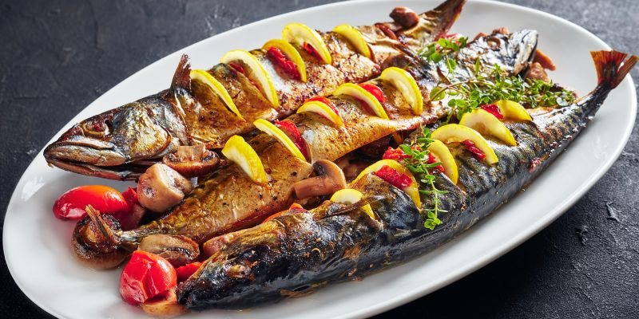

Любимое Блюдо!
Скумбрия печёная с Лимоном

Ингридиенты:
- Скумбрия свежемороженая
- Лимон
- Соль
- Перец
Способ приготовления:
- Размороженую рыбу чистим (голова остаётся)
- Натираем изнутри и снаружи солью и перцем
- Делаем 4-5 несквозных надрезов по бокам
- Нарезаем лимон дольками, кладем в надрезы
- Заворачиваем в пищеву фольгу, ставим на мангал
- Через 10 минут переворачиваем и готовим ещё 5 минут
Блюдо готово!
Положите на тарелку, выдавите свежий лимон.
Попробуйте с соусом тар-тар или соевым.
Приятного аппетита!